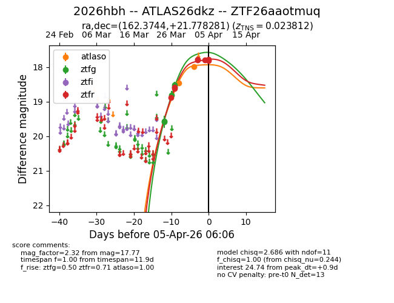
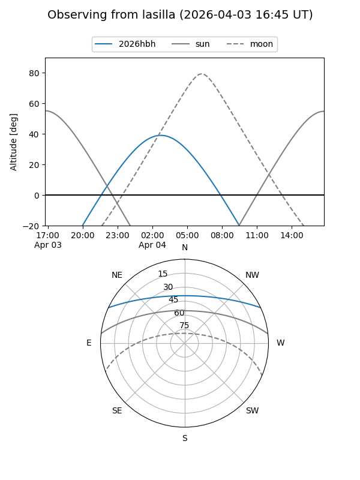
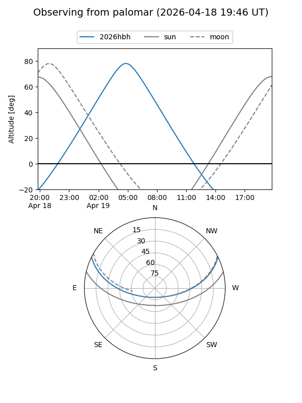
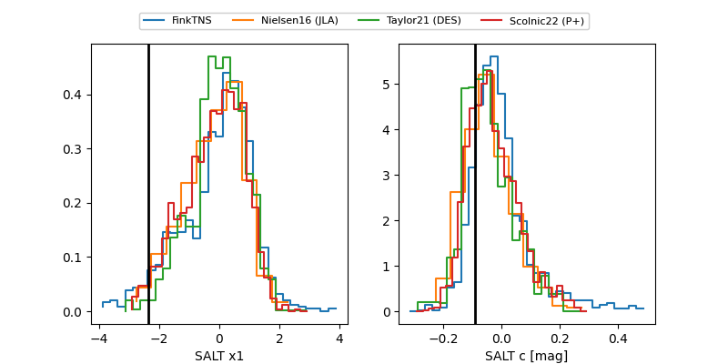

2026hbh
Target 2026hbh at 2026-04-05 06:09
Aliases and brokers:
FINK: link
Lasair: link
ALeRCE: link
TNS: link
YSE: link
alt names
ZTF26aaotmuq (ztf,fink_ztf)
2026hbh (tns,yse)
ATLAS26dkz (atlas)
Coordinates:
equatorial (ra, dec) = 162.3744,+21.77828
equatorial (HMS+DMS) = 10:49:29.86,+21:46:41.81
galactic (l, b) = (217.1449,+61.81101)
Flags:
confirmed ia
Photometry:
last atlaso=17.99, ztfg=18.57, ztfr=17.77
2 atlaso, 5 ztfg, 8 ztfr detections
Lightcurve

Visibility


Additional plots
